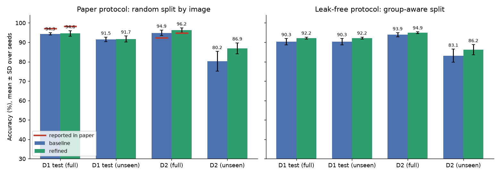
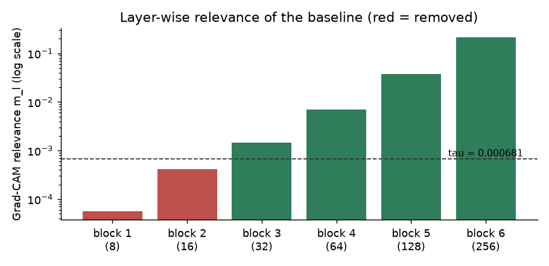
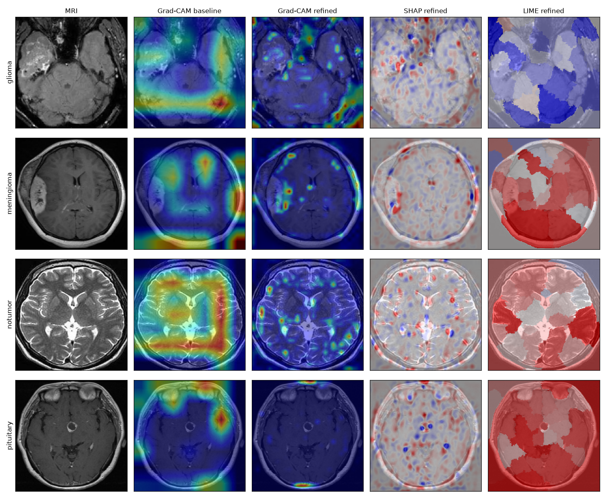

From Explanations to Architecture: Explainability-Driven CNN Refinement for Brain Tumor Classification in MRI
Grad-CAM relevance as a design signal, re-evaluated on leak-free splits
1American International University-Bangladesh 2Brac University 3Shinawatra University 4North South University 5Multimedia University
†Corresponding author

Findings
- Refinement adds about 0.2 points on the paper's protocol. Dataset-1 test accuracy goes from 94.3% to 94.6% (mean of 3 seeds); the paper reports 97.10% to 98.21% with its TensorFlow implementation.
- Duplicates inflate the cross-dataset score. On all of Dataset-2 the refined model scores 96.2%; on the 653 Dataset-2 images that have no copy in the training data it scores 86.9% ± 2.8, about 9 points lower.
- On those unseen images, refinement helps most: 80.2% ± 5.1 for the baseline against 86.9% ± 2.8 for the refined model (macro F1 77.3 against 81.9). This subset is mostly glioma, so macro F1 is the fairer summary.
- On the leak-free protocol (group-aware split; no duplicate straddles train and test), Dataset-1 accuracy is 90.3% for the baseline and 92.2% for the refined model.
- Unseen Dataset-2 images under the leak-free protocol (787): 83.1% baseline and 86.2% refined (macro F1 80.8 and 83.7).
- The refined model is not lighter. Grad-CAM relevance (Eq. 4) grows with depth in every run, so the rule removes the earliest blocks (kept blocks: [2, 3, 4, 5]). Parameters go from 790,356 to 785,220, and because the first remaining layer runs at full resolution, the refined model is several times slower to train and to run (timings on our shared machine are only indicative). The paper's own timings (10 ms to 11 ms per image) point the same way.
Results
| Protocol | Model | D1 test, full | D1 test, unseen | D2, full | D2, unseen |
|---|---|---|---|---|---|
| paper | baseline | 94.3 ± 0.6 | 91.5 ± 1.1 | 94.9 ± 1.4 | 80.2 ± 5.1 |
| paper | refined | 94.6 ± 1.4 | 91.7 ± 1.6 | 96.2 ± 1.2 | 86.9 ± 2.8 |
| clean | baseline | 90.3 ± 1.6 | 90.3 ± 1.6 | 93.9 ± 1.1 | 83.1 ± 3.4 |
| clean | refined | 92.2 ± 0.5 | 92.2 ± 0.5 | 94.9 ± 0.5 | 86.2 ± 2.6 |
Accuracy (%), mean ± SD over seeds 0, 1, 2. "Unseen" removes every test image that has a duplicate (perceptual-hash distance ≤ 4) in the training or validation partition.
Method
Relevance per block
Grad-CAM is computed at every convolutional block of the trained baseline; the mean heatmap intensity over the validation set is the block's relevance ml (Eq. 4).
Remove and retrain
Blocks whose relevance falls below the 25th percentile are removed, the network is rebuilt from the remaining widths and retrained with the same protocol.
Check the explanations
Grad-CAM of both models, SHAP and LIME of the refined model, on test images that have no duplicate in the training data.


Citation
@inproceedings{dasgupta2026explanations,
title = {From Explanations to Architecture: Explainability-Driven {CNN} Refinement for Brain Tumor Classification in {MRI}},
author = {Das Gupta, Rajan and Showmick, Md Imrul Hasan and Wei, Lei and Abir, Mushfiqur Rahman and Akter, Shanjida and Rahat, Md. Yeasin and Hossen, Md. Jakir},
booktitle = {Proceedings of the 2026 6th International Conference on Bioinformatics and Intelligent Computing (BIC 2026)},
publisher = {ACM},
year = {2026},
pages = {853--860},
doi = {10.1145/3809986.3810119},
url = {https://arxiv.org/abs/2506.09161}
}